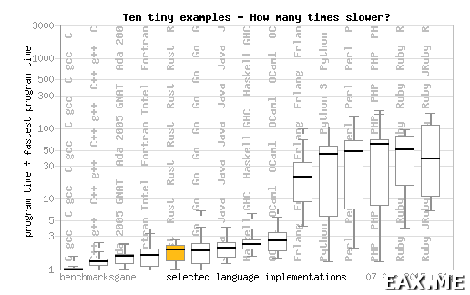

This is an original text by Eax Melanhovich that was rigourosly translated and kindly shared by Andrey Karpov. The original translation can be found here. Many thanks to both.
Why C and C++ Will Never Die
I couldn’t but notice how much interest the readers of this blog [the author’s blog] had shown in the topic “should we let kittens play with new balls of wool?” So I felt like sharing a few more of my reflections on a related subject in regard to the C and C++ languages and the odds that Rust will kill them. No need to tell you that it will inevitably cause a big holy war, so before you proceed, think twice if you really want to go on reading this post and especially participate in a “constructive debate” via comments.
The original article can be found here (in Russian). It was translated and published in our blog by the author’s permission.
Note: Further in this text, I am presuming that Rust is a conscious attempt to create a fast and safe language. After all, it was initially conceived by the guys from Mozilla as a tool to develop a browser engine. But if it proves to be yet another just safe language, then I just don’t get the whole thing. There is plenty of very different safe languages to choose from to any taste, and if Rust is not meant to replace C++, then (1) why does it need to include an unsafe subset?; and (2) why did the authors throw away lightweight processes from Rust? They are convenient, after all, aren’t they? In other words, if I’m wrong in my assumption, then the whole affair just doesn’t seem to make any sense at all.
If you happen to occasionally drop by the linux.org.ru forum, be warned that this post doesn’t have to do with the list of 10 purely technical reasons for not liking Rust that was discussed in this thread. A Skype conversation with dear comrade @sum3rman has revealed that there is more than one opinion on how much “technical” those reasons are. So I have to admit that the list I composed is a lousy one but I’m still taking a risk to cite some of the most interesting clauses from it here. Actually, the number of plain common sense reasons alone is big enough to not care about the technical ones.
It is crystal clear for every sane programmer that C/C++ is not going to die in the nearest future. No one is going to rewrite almost all of the existing desktop applications, operating system kernels, compilers, game and browser engines, virtual machines, databases, archivers, audio and video codecs, tons of other C-libraries, and so on and so forth, into other languages. This is a huge mass of fast, debugged, and time-proven code. Rewriting it is way, way too expensive, risky, and, honestly, doesn’t seem to make sense except in the heads of the most frantic Rust fans. The demand for C/C++ programmers has always been high and will remain so for a long time to come.
OK, what about using Rust to write new code then?
Well, as you probably remember, it is far not the first attempt to create a “better” C/C++. Take the D language, for instance. It was released in 2001 and is a good language indeed. But there are no vacancies, no decent development tools, no remarkable success stories associated with it. The OpenMW project was initially started in D but then the authors suddenly decided to completely rewrite it into C++. As they confessed, they’d been receiving piles of emails where people would say, “you are making a cool project and we’d like to contribute to it, but we don’t know and neither feel like studying this silly D”. Wikipedia tells us that there were a lot of other attempts besides D to kill C++ – for example Vala, Cyclone, Limbo, BitC. How many of you have even heard of these languages?
I think it’s high time we started learning lessons of history. No one sane will ever start using a new language in their projects until you show them a few cool development tools supporting it, tell them a couple of success stories, and show a dozen of programmers working with that language and living close by. As for programmers, they will never – except probably for the youngest ones – spend their time and health on learning another “very best” language until you show them a few cool development tools (not a frob like Racer) and a couple of tens of thousands of ready-made libraries (not “experimental” or “unstable” or stuff like that), tell them a couple of success stories, and show them a dozen of open vacancies in their city or town. You know, it’s like the “Chicken or the Egg” dilemma. On very rare occasions, this problem does get resolved (relatively representative examples are Go and Scala) – mostly thanks to investments of time and money from some large company (Google, Typesafe) who for some reason finds it worthy to popularize a new language.
As I already mentioned, there are too many non-technical reasons alone to feel skeptical about Rust. But let’s imagine for a moment they just do not exist. Then there would be no reasons to not write in Rust, right? Well, this too is very arguable, to say the least.
C/C++ is criticized for a variety of reasons. By the way, most of the critics have never seen C++ code in production. To put it brief and clear, the issue with C++ is that it is very fast (and also demanding little memory, battery charge, etc.) but not safe in the sense that it allows array overruns, addressing freed memory, and so on. Back in the past, this problem urged programmers to develop a variety of safe languages such as Java, C#, Python, and others. But they have proved to be too resource-demanding compared to C++ and have some other drawbacks as well – take, for instance, the inevitable “stop the world” issue during garbage collection. That’s why programmers are struggling to create a language as fast as C++ but also safe. Rust is one of the candidates.
Rust is safe indeed but, unfortunately, far from fast. By the moment of writing this article, it is comparable to Java, Go, and Haskell regarding performance:

I sincerely hope that programmers will find a way to speed it up in time, but until then, it’s going to be of hardly more interest than Scala or Go from the viewpoint of the safety/speed compromise. The question is still open if it is possible at all to make a language both fast and safe or if it is automatically doomed to be twice slower than C/C++ because of the constant checks for array overruns, safe wraps of bindings to C-libraries, and other stuff like that.
And what actually makes Rust safe, by the way? To put it simple, this is a language with a built-in code analyzer and it’s a pretty tough one: it can catch all the bugs typical of C++ and dealing not only with memory management, but multithreading as well. Pass a reference to an assignable object through a pipe to another thread and then try to use this reference yourself – the program just will refuse to compile. And that’s really cool.
But C++ too hasn’t stood still during the last 30 years, and plenty of both static and dynamic analyzers supporting it have been released during this time. Just as one example, watch a short video about Google sanitizers – they are really very tough. Anyway, in any serious project, you use a continuous integration system and run tons of tests when compiling builds. If you don’t, then your troubles are much worse than the language’s lack of safety because static typing doesn’t guarantee correct execution logic! So, since you run tests anyway, why not use sanitizers as well? True, they don’t find all the bugs. On the other hand, if you don’t have a check for an array overrun somewhere at the deeper levels of your code and a sanitizer doesn’t report the bug, maybe it’s just because all the necessary checks are already provided one level higher and another one would only slow down the program? Even without sanitizers, you’ll find lots of stuff just building the project with various compilers on different platforms with assert’s checking your code’s invariants in the “assert(obj->isValid)” fashion and with proper fuzzing. Put rough, the question actually comes down to the good old holy war about the (t)he(o)retic and kolkhoz approaches to software development (that is, an innovative yet too idealistic approach and a traditional empirical approach thought to be careless and simplistic by the supporters of the former – note by translator).
You can often hear an argument that 90% of the execution time is spent executing only 10% of the code (which is, as far as I get, just an empirical law – a quick scan through the Web has failed to reveal any strict scientific researches on this subject). Therefore, you can write most of your code in safe Rust and the rest 10% (the “hot” code) in its unsafe subset, so the bad performance of the current Rust implementation is actually not a problem. OK, but doesn’t it imply that I do not need Rust at all because I could write 90% of my code in Go and the rest 10% in C? Only silver bullet seekers and airy-fairy (t)he(o)retics will use Rust just for the sake of feeling contented about having 100% of a program written in seemingly one language. But these are actually two dialects of one language, which doesn’t look much different from the “Java + C” or “Go + C” combos.
But the 90/10 law is rubbish anyway. Following its logic, we could rewrite 90% of WebKit or VirtualBox or GCC into Java and get the same result. But it is obviously wrong. Even if it’s not because the ratio is very much different in some programs, let’s do some calculations and see. Suppose an entire program is written in unsafe C/C++ and its execution time is, say, 0.9*1 (a small portion of hot code) + 0.1*1 (a bulk of cold code) = 1. Now compare it to a program written in a safe language with C inserts: 0.9*1 + 0.1*2 = 1.1, which, theoretically speaking, makes the difference of 10%. Is it much or little? Well, it depends on the project scale. For Google, even a few percent may help save millions of dollars (see Section 5, “Utilization”, in the paper). Or imagine that with a next update, JVM will suddenly start requiring 10% more resources! I’m scared to even make any guesses about how many zeroes they’ll get in the figure after converting those percent into dollars! 10% is a whole lot for tasks where C and C++ are used.
We keep chanting the phrase “premature optimization is the root of all evil” like a mantra. But if we want to follow it word for word, why not use bubble sort instead of quicksort in all of the code? After all, we can’t know for sure where we’ll get a bottleneck, can we? Why wrap regular action counters into actors or transactional memory when we can use more efficient atomics right away? And, generally speaking, in trivial cases, it doesn’t make sense at all to forcedly initialize each and every single variable, implement a pile of auxiliary checks, and so on. Let there even be a 2-5% performance boost instead of 10%, but it’s not that bad if it took you just an extra couple of minutes to think over. Besides, as we have already figured out, it can make a huge difference in C/C++ programs! After all, who will dare to argue that finding a hot spot, rewriting the code (perhaps tons of it) and proving it has become really faster is an easier job than think about performance in advance?
Even apart from that speed/safety compromise issue, I’m also skeptical about the language’s design as such. In particular as regards to the five types of pointers used in it. On the one hand, it’s not bad to make programmers ponder if their variables are stored in the stack or heap and if they can or cannot be handled by several threads at a time. But on the other hand, imagine you are writing a program and discover at one moment that some variable should be stored in the heap instead of the stack. So you rewrite the code to use Box. Then you figure out that you actually need Rc or Arc. Again, you rewrite all that code. And then, once again, you rewrite it all to have an ordinary variable in the stack. All of that you have to do without a decent IDE at hand. Regular expressions won’t help. Or you might just end up with a nightmare like “Vec<Rc<RefCell<Box<Trait>>>>” – say hello to Java! But the saddest thing about it is that the compiler already knows everything about the lifetime of every variable and could automatically insert all those Box’s, Arc’s, etc. But for some reason, this duty was shifted on to the programmer. It would be much more convenient to let the programmer simply write val (we are living in the third millennium, after all!) and explicitly specify Box or Rc where necessary. From this viewpoint, Rust’s developers have screwed up the whole thing.
This, in particular, makes Rust’s scope much narrower. No one sane will write web and server-side software in a language like that – especially considering that it doesn’t offer any significant advantages over those languages for JVM. Even Go – with normal lightweight processes (not futures) – seems a way better choice for solving these tasks. As for futures, you have to learn how to handle them right not to shoot yourself in the foot – and you are talking of “safe languages”, huh? Sure, all these languages have their own peculiarities – take that very “stop the world”, for example. But this problem can be solved both by splitting the code into micro services and through other techniques. And yes, no one will be willing to translate Rust into JavaScript, use it to write scripts for AWS or as a query language for MongoDB. For Android, it’s also hardly probable, but for a different reason: there is way more than one architecture there, so JVM will do much better. So if you happen to think that Rust is “good for any task”, I have to disappoint you.
And here’s a few more reasons to finish it off:
- Macros used as a crutch to make up for the excessive verbosity caused by the absence of normal exceptions. I already wrote about the metaprogramming issues – it is because of them, in particular, that we are hardly ever to get a decent IDE for Rust. Also, though I’m not sure, it seems that macros in Rust don’t even have namespaces.
- People are idiots and cargo actively encourages downloading packages directly from git repositories, bypassing Crates.io. As a result, we risk ending up with a huge mess with packages like in the Erlang world with its Rabar. By the way, I suspect the Go world has a similar trouble.
- Like many of new languages, Rust is walking the path of simplification. I can generally understand why it doesn’t have a decent inheritance and exceptions, but the fact itself that someone is making decisions for me regarding things like that makes me feel somewhat displeased. C++ doesn’t restrict programmers regarding what they can or cannot use.
- Now, since we have taken the path of simplification, why not throw away all those language extensions? The current state of things resembles the Haskell world where every programmer is coding in their own dialect.
- Smart pointers, for you to know, are far not free of charge and do not ensure a fixed time of garbage collection. What if some thread gets honor to free a very deep data structure? While it is wandering a labyrinth of dead references, all the other threads depending on it are patiently waiting dumb. Erlang with its small pieces has a similar trouble – I’ve faced it myself many times. Smart pointers also have problems of their own – for example memory fragmentation and leaks. Just leave a weak pointer in a loop structure – the whole thing is screwed up. And all that in a language pretending to be safe… If you want a fixed GC time, study your program’s behavior under load and take precautions (for example, provide for object pools) if you are not satisfied with the figures, or manage memory manually.
- Has anyone seen a strict description of Rust’s semantics? Does it have a memory model at least? And you call it a “safe” language “ensuring correctness” of programs, especially considering that it can interpret the source code in ten different ways?
- I can’t but remind you for one more time that the source of troubles is usually in humans, not technology. If your C++ code is not good enough or Java code is painfully slow, it’s not because the technology is bad – it’s because you haven’t learned how to use it right. That way, you won’t be satisfied with Rust either, but just for some other reasons. Isn’t it easier to learn how to use more popular tools and start liking them?
So, to sum it up, personally I will be investing my time into studying C/C++ rather than Rust in the next 5 or so years. C++ is an industrial standard. Programmers have been using it to solve a huge variety of tasks for over 30 years now. As for Rust and stuff like that – they are just odd toys with vague future. People have been predicting C++’s soon death since the 2000-s, but C/C++ hasn’t become less used and demanded for since then. Quite on the contrary, in fact. It is evolving (C ++11, C++14), new tools are released (take CLion and Clang, for example), and the number of vacancies is just huge.
A C++ programmer will hardly ever have any difficulties finding a job with a more than worthy salary and, if necessary, can quickly learn Rust. But the opposite scenario is very, very unlikely. By the way, the language choice is far not the only and most important factor when picking a new job. Besides, a skilled C/C++ programmer can easily find their way in PostgreSQL’s or Linux kernel’s source code, has access to modern powerful development tools, and has a pile of books and articles at hand (for example on OpenGL).
So, take care of your health and don’t waste your time – you have less of those than you think!
Related Posts
Pingback: Критика языка Rust и почему C/C++ никогда не умрет | Записки программиста()